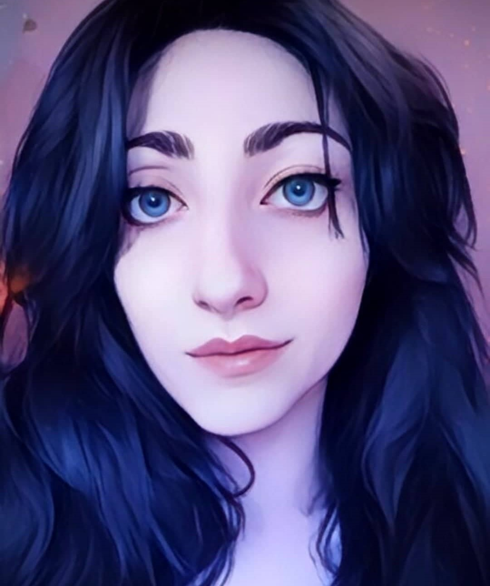

Federica D'Angelo

Capacità e Competenze
- Web designer con esperienza presso agenzia (Wordpress; Elementor; HTML; CSS)
- Specializzazione in narratologia/Scrittura creativa ottenuta attraverso corsi di scrittura creativa e pubblicazioni presso case editrici e online.
- Sarta e costumista con esperienza pregressa
- Ottimo utilizzo dei Social Networks e forte presenza come autrice/lettrice a scopo autopromozionale (Tiktok, Instagram, Facebook.)
Istruzione e Formazione
- Diplomata al Liceo linguistico Matilde Serao di Pomigliano D'Arco in Ambito linguistico sperimentale (2008-2013)
Certificazioni
- Formazione di narratologia presso Accademia online Scrittura Creativa (2019-2020)
- Formazione di Sartoria e Modellistica presso scuola di cucito IPAM di Pomigliano D'Arco (2016-2017)
- Qualifica di Addetta al Social Media Marketing con codice progetto 002PROTD2228929 (26/05/2022-30/06/2022)
- Qualifica di Web Master con Lingua Inglese con codice progetto 201PROTD2259570 (07/11/2022-16/12/2022)
- Qualifica di Web Developer. Frequentazione autonoma del corso professionale su piattaforma Udemy (20/01/2024-Attualmente in corso)
Esperienze Lavorative
- Operatrice telemarketing presso Vodafone S.P.A. (2013-2014)
- Sarta e Costumista presso Rika-Chan Cosplay Costumes (2015-2020)
- Sarta/rimacatrice presso Camiceria Privata di San Sebastiano al Vesuvio (2017-2018)
- Sarta presso Sartotia Privata di Abiti da Ballo (2019)
Altre Competenze
- Conoscenza avanzata della lingua Inglese
- Conoscenza elementare della lingua Francese
- Ottimo utilizzo degli applicativi Microsoft Word ed Excel
I miei hobbies
Contatti